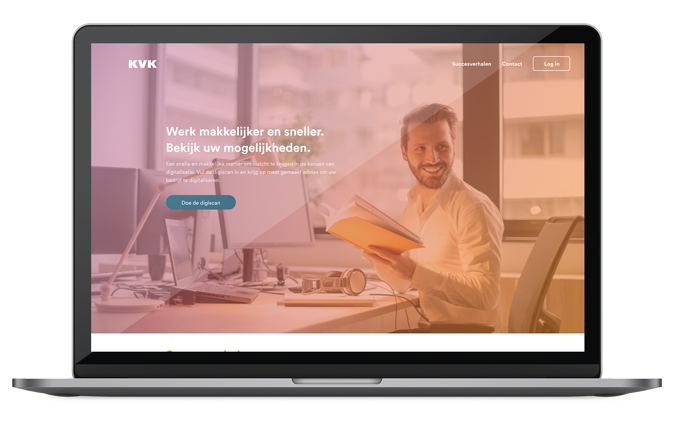
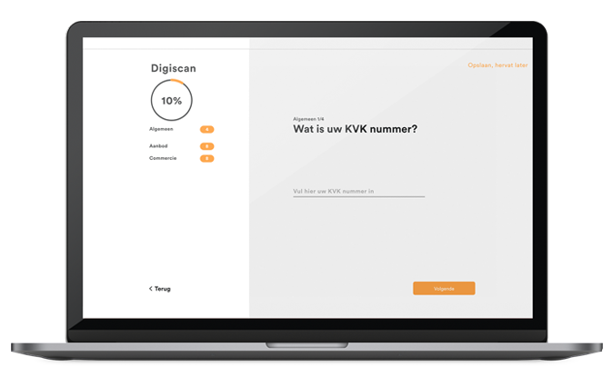

In drie fases helpen wij bedrijven met digitaliseren, dit doen wij in vier
stappen. Enthousiasmeren, inspireren, reageren en genereren. Tijdens
deze vier stappen krijgt de MKB’er de voordelen van digitalisatie
voorgeschoteld en sporen wij hem aan om ook de digitaliseren.
Scroll naar beneden voor een uitgebreide uitleg van de vier stappen, om
kennis te maken met ons team en onze bestanden te downloaden.
Tijdens de voorbeleving ervaart de MKB’er de eerste stap, enthousiasmeren. De MKB’er wordt namelijk enthousiast gemaakt over het onderwerp digitaliseren door het zien van een filmpje. In dit filmpje is te zien dat een andere ondernemer de digiscan heeft ingevuld en op basis van die gegevens zijn eigen winkel kan zien door de telefoon. Echter wordt er door de telefoon Augmented Reality aan toegevoegd zodat er allerlei pop-ups in beeld komen met verbeter mogelijkheden. Deze mogelijkheden zijn bijvoorbeeld het digitaal verbinden van de kassa en de inventaris zodat de inventaris automatisch wordt bijgewerkt als de kassa het product afrekent. De ondernemer in het filmpje verteld ook wat de resultaten uit de scan hebben opgeleverd, meer winst, meer tijd voor andere dingen, meer contact met de klanten, noem het maar op. De MKB’er wordt door dit verhaal van een andere ondernemer erg enthousiast omdat hij kan zien dat het bij andere ondernemingen positieve gevolgen heeft. De MKB’er gaat thuis zelf naar de website van KVK digital om meer informatie te krijgen over de digiscan.
Het filmpje komt niet alleen via de mail bij de MKB’er, maar wordt ook laten zien op congressen, bijeenkomsten van winkeliersverenigingen en seminars. Op deze manier krijgt de MKB'er het filmpje sowieso te zien.
Tijdens deze fase van het traject komen stap twee en drie, inspireren en reageren, aan bod. Op de website van KVK digital is namelijk niet alleen informatie over de digiscan te vinden maar zijn er nog veel meer succesverhalen van ondernemers die gedigitaliseerd zijn. Hier kan de MKB’er talloze verhalen lezen over ondernemers die een bepaalde vorm van digitalisatie hebben toegepast. Niet alleen wordt verteld wat ze gedaan hebben, maar ook waar ze tegenaan zijn gelopen, hoe ze dit hebben opgelost, hoe de KVK ze geholpen heeft bij dit proces en wat het uiteindelijke voordeel is dat ze hebben overgehouden aan de digitalisatie. Dit is de inspiratie stap, de MKb’er wordt door andere ondernemer geïnspireerd om zelf ook te digitaliseren. De derde stap is reageren. In deze stap vult de MKB’er zelf de scan in. De succesverhalen van de andere ondernemers hebben de MKB’er doen besluiten om ook te digitaliseren. Aan de hand van een paar vragen vult de MKB’er de digiscan in. Dit gaar snel en makkelijk door de nieuwe interface van de digiscan, die geïntegreerd is in het platform van KVK digital.
 Na het invullen van de scan moet de MKB’er even wachten, maar dan is het zover. De MKB’er kan met zijn telefoon door zijn eigen winkel kijken en ziet de pop-ups met verschillende verbeter mogelijkheden verschijnen. De ondernemer is dolenthousiast over de verschillende mogelijkheden die digitaliseren biedt.